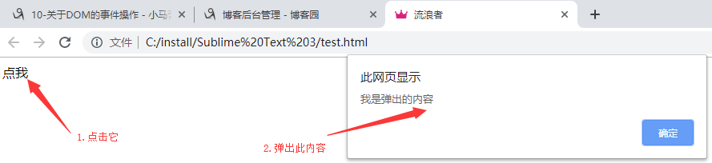
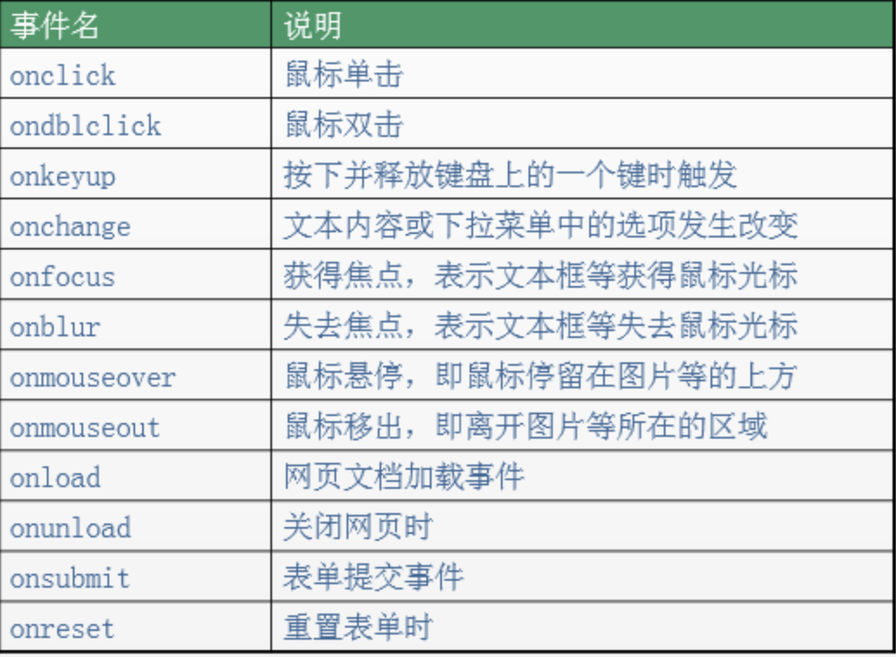
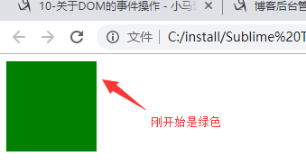
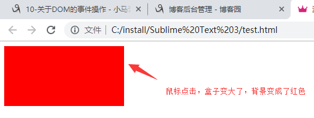

DOM：文档对象模型，操作网页上元素的API。比如让盒子移动、变色、轮播图等。
JS是以事件驱动为核心的一门语言。
事件的三要素：事件源、事件、事件驱动程序。
事件源：引发后续事件的HTML标签。
事件：JS已经定义好了。
事件驱动程序：对样式和HTML的操作。也就是DOM。
书写步骤：
1.获取事件源：document.getElementById(“box”);
2.绑定事件：事件源box.事件onclick = function（）{事件驱动程序}；
3.书写事件驱动程序：关于DOM的操作。
1 <!DOCTYPE html>
2 <html lang="en">
3 <head>
4 <meta charset="UTF-8">
5 <title>流浪者</title>
6
7 </head>
8 <body>
9 <div id="box">点我</div>
10
11 <script>
12 //1.获取事件源
13 var div = document.getElementById('box');
14 //2.绑定事件
15 div.onclick = function () {
16 //3.书写事件驱动程序
17 alert('我是弹出的内容');
18 }
19 </script>
20
21 </body>
22 </html>
常见事件如下：

方式一：通过id获取单个标签
var div1 = document.getElementById('box');
方式二：通过标签名获取所有标签数组
var arr = document.getElementsByTagName('div');
方式三：通过类名获取所有标签数组
var arr = document.getElementsByClassName('haha');
方式一：直接绑定匿名函数
1 <!DOCTYPE html>
2 <html lang="en">
3 <head>
4 <meta charset="UTF-8">
5 <title>流浪者</title>
6
7 </head>
8 <body>
9 <div id="box">点我</div>
10
11 <script>
12 //1.获取事件源
13 var div = document.getElementById('box');
14 //2.绑定事件的第一种方式
15 div.onclick = function () {
16 //3.书写事件驱动程序
17 alert('我是弹出的内容');
18 }
19 </script>
20
21 </body>
22 </html>
方式二：先单独定义函数，再绑定
1 <!DOCTYPE html>
2 <html lang="en">
3 <head>
4 <meta charset="UTF-8">
5 <title>流浪者</title>
6
7 </head>
8 <body>
9 <div id="box">点我</div>
10
11 <script>
12 //1.获取事件源
13 var div = document.getElementById('box');
14 //2.绑定事件的第二种方式
15 div.onclick = fn;
16 function fn() {
17 //3.书写事件驱动程序
18 alert('我是弹出的内容');
19 }
20 </script>
21
22 </body>
23 </html>
注意：绑定事件的时候，写的是fn，而不是fn（），fn代表的是整个函数，而fn（）代表的是返回值。
方式三：行内绑定
1 <!DOCTYPE html>
2 <html lang="en">
3 <head>
4 <meta charset="UTF-8">
5 <title>流浪者</title>
6
7 </head>
8 <body>
9 <div id="box" onclick="fn()">点我</div>
10
11 <script>
12 //1.获取事件源
13 var div = document.getElementById('box');
14 //2.绑定事件的第三种方式
15 function fn() {
16 //3.书写事件驱动程序
17 alert('我是弹出的内容');
18 }
19 </script>
20
21 </body>
22 </html>
1 <!DOCTYPE html>
2 <html lang="en">
3 <head>
4 <meta charset="UTF-8">
5 <title>流浪者</title>
6 <style>
7 #box{
8 width: 100px;
9 height: 100px;
10 background-color: green;
11 cursor: pointer;
12 }
13 </style>
14 </head>
15 <body>
16
17 <div id="box"></div>
18
19 <script>
20 var oDiv = document.getElementById('box');
21 oDiv.onclick = function () {
22 oDiv.style.width = '200px';
23 oDiv.style.height = '2oopx';
24 oDiv.style.backgroundColor = 'red';
25 }
26 </script>
27
28 </body>
29 </html>

JS中的属性值要加引号；
JS中的属性名要使用驼峰体；
网页文档加载完毕，触发onload事件。
<script type="text/javascript">
window.onload = function () {
console.log("小马哥"); //等页面加载完毕时，打印字符串
}
</script>有一点我们要知道：js的加载是和html同步加载的。因此，如果使用元素在定义元素之前，容易报错。这个时候，onload事件就能派上用场了，我们可以把使用元素的代码放在onload里，就能保证这段代码是最后执行。
建议是：整个页面上所有元素加载完毕在执行js内容。所以，window.onload可以预防使用标签在定义标签之前。
1 <!DOCTYPE html>
2 <html lang="en">
3 <head>
4 <meta charset="UTF-8">
5 <title>Document</title>
6 <style type="text/css">
7 *{
8 padding: 0;
9 margin: 0;
10 }
11 .top-banner{
12 /*position: relative;*/
13 background-color: rgb(230, 15, 82);
14 }
15 .top-banner .w{
16 width: 1190px;
17 position: relative;
18 margin: 0 auto;
19 }
20 .top-banner .banner{
21 display: block;
22 width: 100%;
23 height: 80px;
24 background: url('./close.jpg') no-repeat center 0;
25 }
26 .top-banner .close{
27 position: absolute;
28 right: 0;
29 top:0;
30 text-decoration: none;
31 color: white;
32 width: 20px;
33 height: 20px;
34 line-height: 20px;
35 text-align: center;
36 }
37 .hide{
38 display: none;
39 }
40
41 </style>
42 </head>
43 <body>
44 <div class="top-banner" id="topBanner">
45 <div class="w">
46 <a href="#" class="banner"></a>
47 <a href="#" class="close" id="closeBanner">x</a>
48 </div>
49 </div>
50 <script type="text/javascript">
51 // /需求：点击案例，隐藏盒子。
52 //思路：点击a链接，让top-banner这个盒子隐藏起来（加隐藏类名）。
53
54 window.onload = function(){
55 // /1.获取事件源和相关元素
56 var closeBanner = document.getElementById('closeBanner');
57 var topBanner = document.getElementById('topBanner');
58 //2.绑定事件
59 closeBanner.onclick = function(){
60 //3.书写事件驱动程序
61 //类控制
62 //topBanner.className += ' hide';//保留原类名，添加新类名
63 //topBanner.className = 'hide';
64 //替换旧类名
65 topBanner.style.display = 'none';
66 }
67 }
68 </script>
69
70
71 </body>
72 </html> 1 <!DOCTYPE html>
2 <html>
3 <head lang="en">
4 <meta charset="UTF-8">
5 <title></title>
6 <script>
7 //window.onload页面加载完毕以后再执行此代码
8 window.onload = function () {
9 //需求：鼠标放到img上，更换为另一张图片，也就是修改路径（src的值）。
10 //步骤：
11 //1.获取事件源
12 //2.绑定事件
13 //3.书写事件驱动程序
14
15 //1.获取事件源
16 var img = document.getElementById("box");
17 //2.绑定事件(悬停事件：鼠标进入到事件源中立即出发事件)
18 img.onmouseover = function () {
19 //3.书写事件驱动程序(修改src)
20 img.src = "image/jd2.png";
21 // this.src = "image/jd2.png";
22 }
23
24 //1.获取事件源
25 var img = document.getElementById("box");
26 //2.绑定事件(悬停事件：鼠标进入到事件源中立即出发事件)
27 img.onmouseout = function () {
28 //3.书写事件驱动程序(修改src)
29 img.src = "image/jd1.png";
30 }
31 }
32 </script>
33 </head>
34 <body>
35
36 <img id="box" src="image/jd1.png" style="cursor: pointer;border: 1px solid #ccc;"/>
37
38 </body>
39 </html>
作者：流浪者
日期：2019-09-04